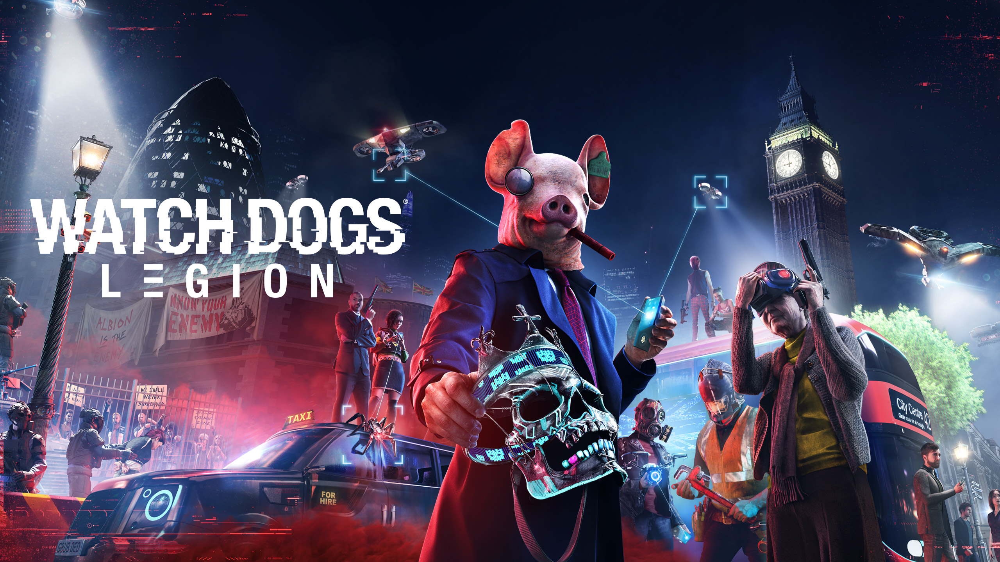
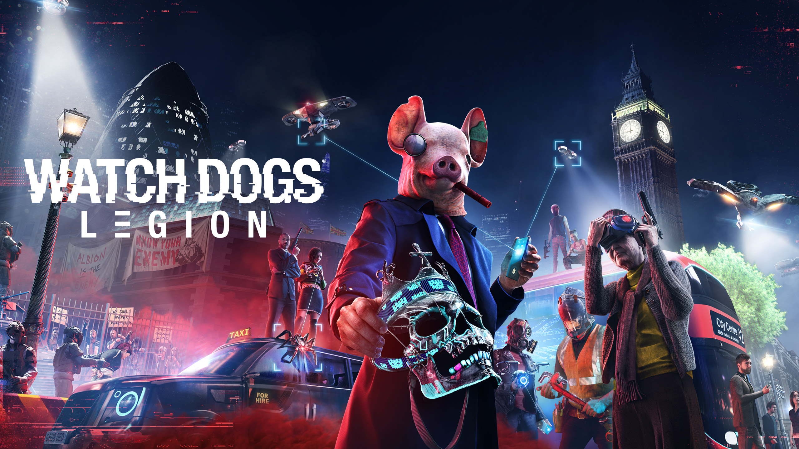

Filip Czarnecki
QA Specialist
Witam, aktualnie studiuje programowanie gier tak aby
jeszcze lepiej zrozumieć testowanie i pracę z zespołem
programistów, designerów tak aby przepływ informacji oraz
zgłaszane bugi były doskonale rozumiane przez cały zespół.
Testuję gry już 5 lat i aktualnie chciałbym rozwiać się w
kierunku QA Seniora/ Associate Lead.
Edukacja
Informatyka - Front-End 2025r
Języki
Angielski C1 (Zaawansowany)
Polski Ojczysty
Doświadczenie:
QA Technician 2019 - 2021 2lata 7 miesięci - Testronic
QA Specilist 2021 - Obecenie - Artificer
Umiejętności:
Testowanie w Unreal Enegine 4/5
Testowanie w Unity
Jira
ClickUp
Monday
Regression Testing: Przeprowadzałem testy regresji, identyfikując potencjalne problemy związane z nowo wprowadzanymi funkcjami.
Play Testing: Zapewniałem że interakcja użytkownika z grą jest płynna i satysfakcjonująca.
Soak Testing: Przeprowadzałem testy obciążeniowe, aby ocenić stabilność systemu podczas długotrwałego użytkowania.
Performance Testing: Uczestniczyłem w testach wydajności, identyfikując i optymalizując obszary wpływające na wydajność gry.
Beta Testing: Koordynowałem i brałem udział w testowaniu wersji beta, zbierając istotne dane zwrotne od społeczności użytkowników.
Localization Testing: Przeprowadzałem testy lokalizacyjne, zapewniając, że gra działa poprawnie w każdym jęzku.
Compliance Testing: Zapewniałem zgodność produktu z obowiązującymi normami i regulacjami.
Multiplayer Testing: Identyfikowałem i rozwiązujązywałem problemy związane z trybemem Multiplayer.
Exploratory Testing: Stosowałem metody eksploracyjne podczas testowania, identyfikując potencjalne scenariusze i przypadki użycia.
Smoke Testing: Wykonywałem smoke testing na nowych wersjach, szybko oceniając stabilność i podstawową funkcjonalność.
Ukończone tytuły: (tutaj można mnie znaleźć w napisach)
ShowGunners
Predator Hunting Grounds
The Ascent
Battltech
League of Legends: Wildrift
Watch Dogs: Legion
 797502814
797502814
 Bagno 5 Warszawa 00-112
Bagno 5 Warszawa 00-112
 Filipczarnecki.k@gmail.com
Filipczarnecki.k@gmail.com
 LinkedIn
LinkedIn
 Upwork
Upwork


 
